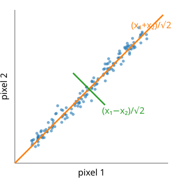
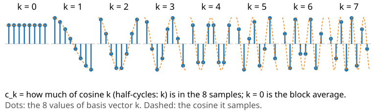
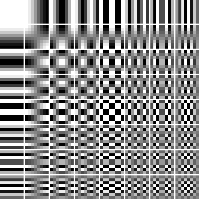
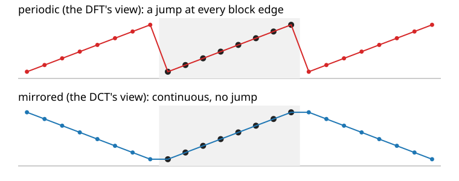

The Fourier unit showed that 3% of the Fourier coefficients keep most of an image. This unit turns that observation into a codec: transform → quantise → entropy code.
Energy compaction: a good change of basis puts most of the image in a few coefficients.
The KLT (PCA of image blocks) is the best linear transform, but it depends on the data.
The DCT: a fixed cosine basis, close to the KLT for natural images, and fast.
Why the DCT and not the DFT: the DFT sees a jump at the block edges.
Why 8 × 8 blocks, and what that costs.
Slides titled The math give the formulas and proofs; the ideas are complete without them.
From “keep the largest” to a codec
Recall (Fourier unit): keeping the largest 3% of the Fourier coefficients of the micrograph keeps 81% of its variation. Transform coding makes this a codec in three steps:
Transform: a change of basis that decorrelates the pixels and compacts the energy into few coefficients. Exact and invertible.
Quantise: round the coefficients, coarsely where it matters little. The only lossy step.
Entropy code what is left: many zeros and small integers (run lengths, Huffman, from the first unit).
The transform itself does not compress anything: 64 pixels in, 64 coefficients out. It rearranges the information so that steps 2 and 3 can work.
Energy compaction: two pixels

Pairs of neighbouring pixels (x_1, x_2) lie near the diagonal.
Rotate the axes by 45°: new coordinates (x_1 + x_2)/\sqrt2 (the pair’s brightness) and (x_1 - x_2)/\sqrt2 (its difference).
The first carries almost all of the spread, the second almost nothing: store it coarsely or not at all.
A rotation keeps lengths: the squared error made on the coefficients is exactly the squared error of the pixels (Parseval). So we may decide what to throw away in the new basis.
The 2-point DCT is this rotation.
The math: orthonormal transforms and Parseval
An orthonormal transform c = A x with A^\top A = I (rows = basis vectors):
inverse x = A^\top c: the image is a sum of basis images, weighted by the coefficients;
Parseval: \|c\|^2 = c^\top c = x^\top A^\top A x = \|x\|^2;
dropping or changing coefficients by \delta c changes the image by \delta x = A^\top \delta c with \|\delta x\| = \|\delta c\|: the error of a quantised coefficient goes unchanged into the image;
keeping the coefficients k \in K: squared error = \sum_{k \notin K} c_k^2. Best K for one block: the largest |c_k|.
2 points: A = \tfrac{1}{\sqrt2}\begin{pmatrix} 1 & 1 \\ 1 & -1 \end{pmatrix}, a rotation by 45° (and a reflection).
The best rotation: the KLT
For more pixels, which rotation is best? Recall the PCA unit: the principal components of a cloud of points are the eigenvectors of its covariance matrix, ordered by variance.
Take all 8 × 8 blocks of an image as points in 64 dimensions. Their PCA basis is the Karhunen–Loève transform (KLT).
It decorrelates the coefficients exactly and puts the most energy into the first k coefficients, for every k: no linear transform compacts better.
But it depends on the image: it must be computed (an eigenproblem of size 64) and stored or sent with the file, and there is no fast algorithm.
The math: why the KLT is optimal
Blocks x with mean zero and covariance S = E[x x^\top] (64 × 64); eigenvectors u_1, \dots, u_{64}, eigenvalues \lambda_1 \ge \dots \ge \lambda_{64}.
For any orthonormal basis a_1, \dots, a_{64}, the expected energy in the first k coefficients is \sum_{j \le k} a_j^\top S a_j \le \sum_{j \le k} \lambda_j (Ky Fan; for k = 1 it is the Rayleigh quotient of the PCA unit). Equality for the KLT.
Expected squared error when dropping all but k: \sum_{j > k} \lambda_j, the smallest possible.
For a stationary signal whose neighbour correlation \rho decays as \rho^{|i-j|} (first-order Markov), the eigenvectors of S approach the DCT basis as \rho \to 1: the DCT is a fixed approximation of the KLT of smooth images.
The DCT: cosines that fit the block

8 basis vectors: sampled cosines with 0, \tfrac12, 1, \dots, \tfrac72 periods across the block. k = 0 is the average.
Real numbers, a fixed basis (nothing to store), and a fast algorithm like the FFT.
For smooth image blocks it is almost as good as the KLT: the next slides compare them.
With these \alpha_k the matrix D_{kn} = \alpha_k \cos\frac{\pi(2n+1)k}{2N} is orthonormal: x_n = \sum_k \alpha_k c_k \cos\frac{\pi(2n+1)k}{2N} (the DCT-III) and Parseval holds. (Unlike the unnormalised DFT of the Fourier unit.)
c_0 = \sqrt N \cdot mean: for 8 samples, c_0 = 2\sqrt2 \cdot mean; in 2D on 8 × 8, C_{00} = 8 \cdot mean.
2D, separable: C = D X D^\top (transform the rows, then the columns).
64 basis images

The 2D DCT of an 8 × 8 block: products of a horizontal and a vertical cosine.
Top left: the DC (block average). To the right: more horizontal variation; down: more vertical variation.
Every 8 × 8 block is a weighted sum of these 64 images; the weights are the coefficients.
Flat block: only DC. A vertical edge: only the top row (horizontal frequencies). Fine stripes: one or two coefficients far to the right.
Zigzag order: read the coefficients diagonally from top left to bottom right, roughly from low to high frequency.
Try it: one block in three bases
Why not the DFT?

The DFT treats the block as one period of a periodic signal (Fourier unit): a ramp becomes a sawtooth with a jump at every block edge. The jump needs many high frequencies: coefficients decay slowly (\sim 1/k).
The DCT is the DFT of the block mirrored: no jump, coefficients decay fast (\sim 1/k^2).
A ramp block from the demo, first 3 coefficients: DCT keeps 99.6% of the energy (error 1.6 grey levels), DFT 74.8% (error 12.7).
The math: the DCT is a mirrored DFT
Mirror the block: y = (x_0, \dots, x_{N-1}, x_{N-1}, \dots, x_0), length 2N. Its DFT:
So c_k = \alpha_k \tfrac12 \operatorname{Re}\!\big(e^{-i\pi k/2N} Y_k\big): one FFT of length 2N gives the DCT (this is how the demos compute large DCTs).
The mirrored signal is continuous at the block edges (and at its period); its derivative jumps. A jump in the signal gives Fourier coefficients \sim 1/k, a jump in the derivative \sim 1/k^2.
Try it: periodic or mirrored?
Why blocks, and what they cost
Local statistics: a block is either flat, an edge or texture; one transform of the whole image mixes them.
Small and fast: 1024 independent 8 × 8 transforms for 256 × 256; little memory, easy hardware.
At the same kept fraction the block DCT is about as good as a whole-image DCT (exercise: 3% keep 81.5% against 83.7% of the micrograph’s variation), and both beat the whole-image DFT (81.3%).
The cost: each block is coded alone, so errors jump at block boundaries: blocking, the typical JPEG artefact (next unit).
Alternatives: the wavelet transform (previous day of this elective) is multiresolution and has no block grid; JPEG 2000 uses it (last unit). The moments day makes the same “keep the first coefficients” argument with Legendre polynomials.